Data Analysis 4
BIOL10272: Practical Techniques
Dr Axel Barlow
email: axel.barlow@ntu.ac.uk
Data analysis 4
- Visualising two quantitative variables: scatterplots
- Dependent and independent variables
- Fitting a linear relationship:
least squares - Correlation coefficients:
r - Interpreting a correlation
- Quantifying the linear relationship
- Modelling the relationship: linear regression
Visualising two quantitative variables
One categorical variable, one quantitative variable
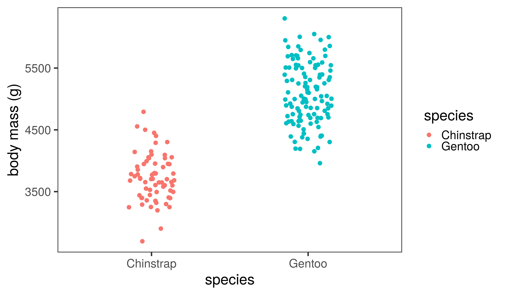
Two quantitative variables
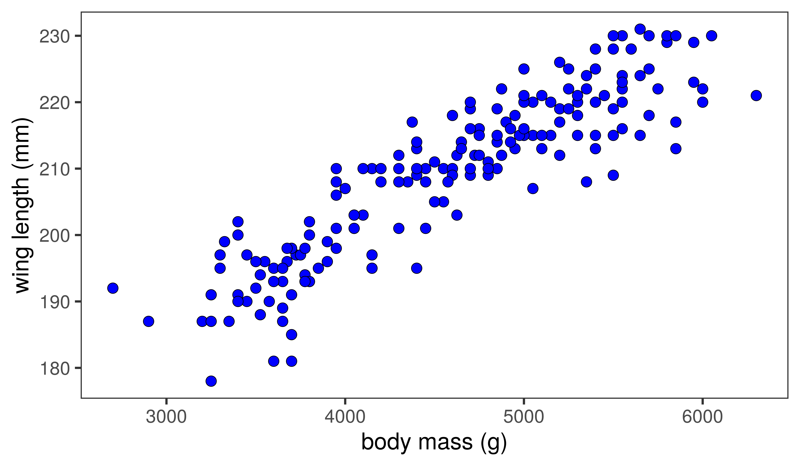
Which variable goes on which axis?
- We need to identify the
independentanddependentvariables - The independent variable goes on the x axis
- The dependent variable goes on the y axis
In an experiment
- The independent variable is the thing we manipulate
- The dependent variable is the thing we expect to change
- We hypothesise the independent variable has an effect on the dependendent variable
- The null hypothesis is no effect
Examples
| Dependent variable | Independent variable |
|---|---|
| Number of species | Habitat |
| Blood pressure | Drug test and control groups |
| Number of genes | Free living or parasitic microorganism |
| Disease prevalence | Country |
| Gene expression | Developmental stage |
ELISA assay development
- Measure optical density at known protein concentrations
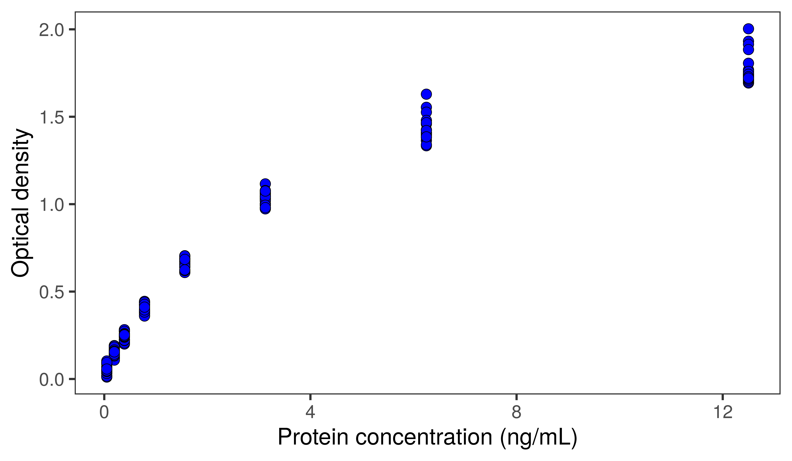
Sometimes, it's uncertain
Exploratory analysis of Gentoo penguin data
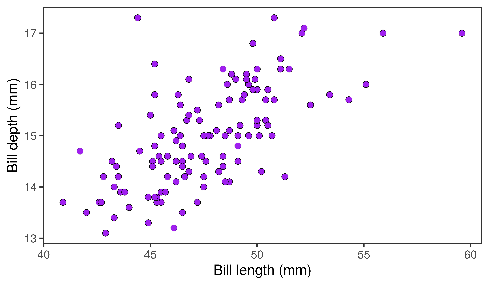
Exploratory analysis of Gentoo penguin data
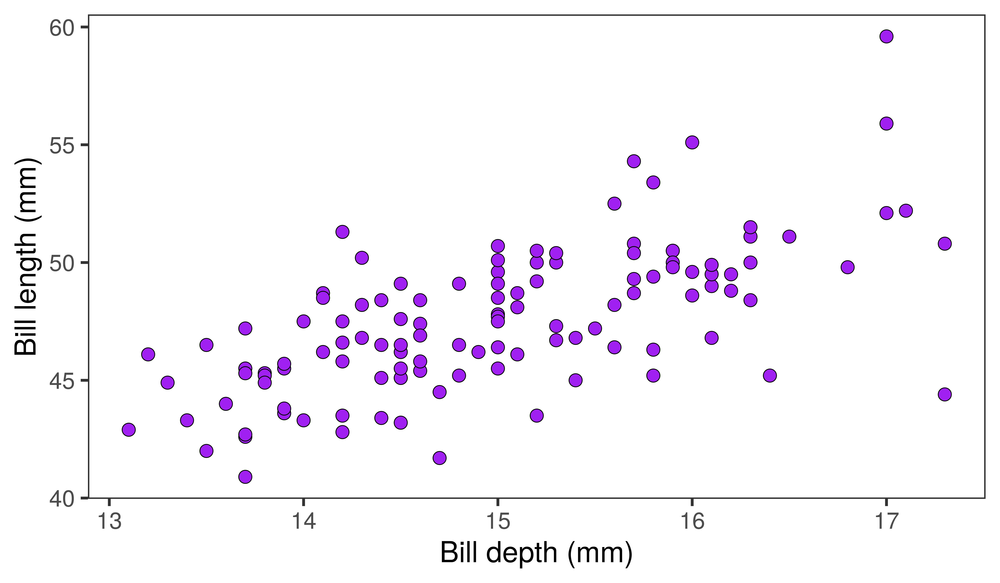
Fitting a linear relationship
Correlation
A connection, or relationship, between two or more things
In Biosciences
A linear relationship between two quantitative variables
Linear relationship
- The points in the scatterplot form a straight line
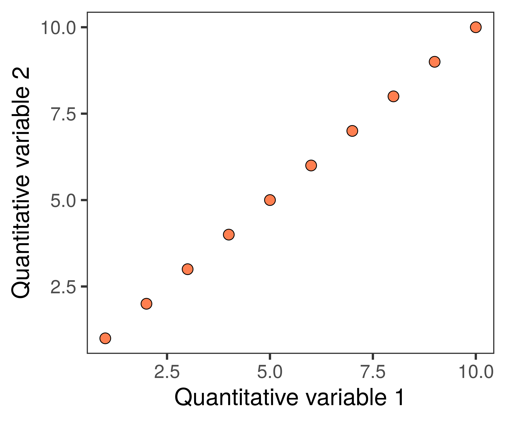
- Positive correlation
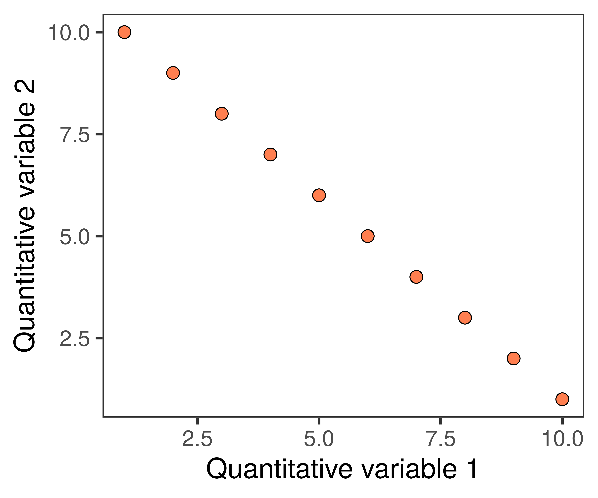
- Negative correlation
Fitting a linear relationship to real data
- We can add a
line of best fitusing the method ofleast squares - The straight line that minimises the square of the
residuals
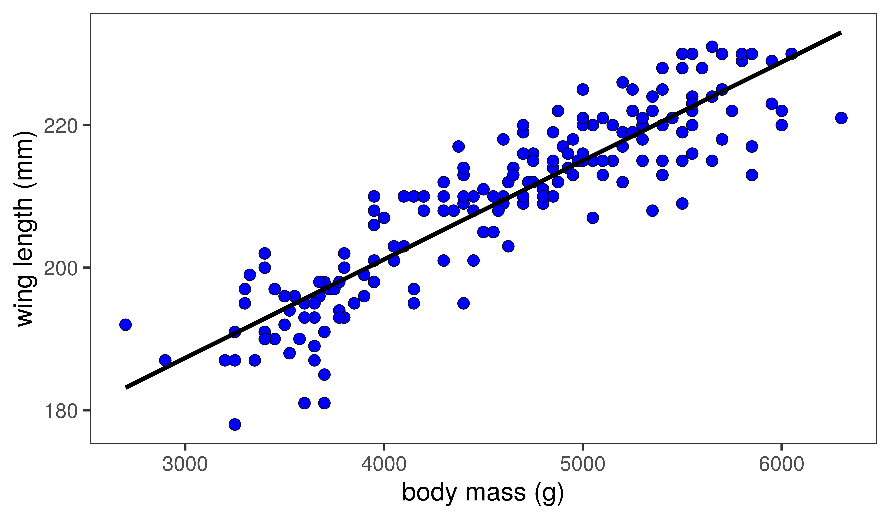
Fitting a linear relationship to real data
- We can add a
line of best fitusing the method ofleast squares - The straight line that minimises the square of the
residuals
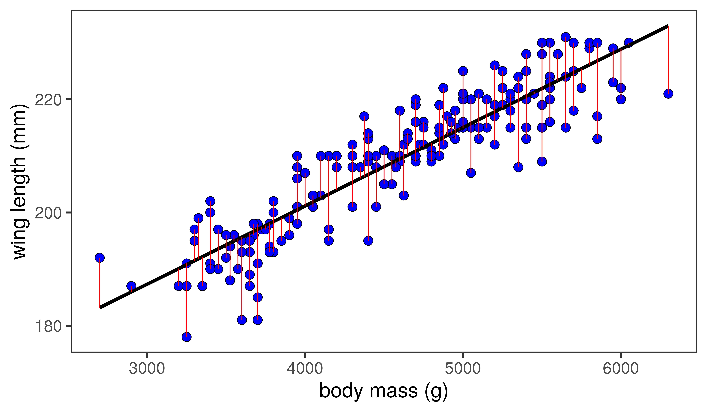
Calculating the strength of the relationship
If the residuals are small, the variables have a strong linear relationship
- We can measure this strength using a
correlation coefficient - We will use the
Pearson correlation coefficient, which can be represented asr - Scales from -1 to +1
- 0 = no linear relationship
- +1 = perfect positive linear relationship
- -1 = perfect negative linear relationship
- We can also obtain a
p-value - Null hypothesis: there is no linear relationship, the true
r= 0
r shows the strength of correlation
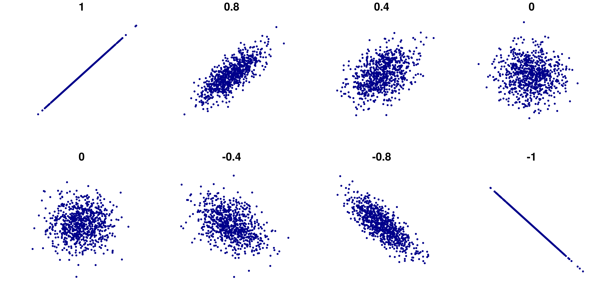
R code for plot by Denis Boigelot
The slope does not affect r
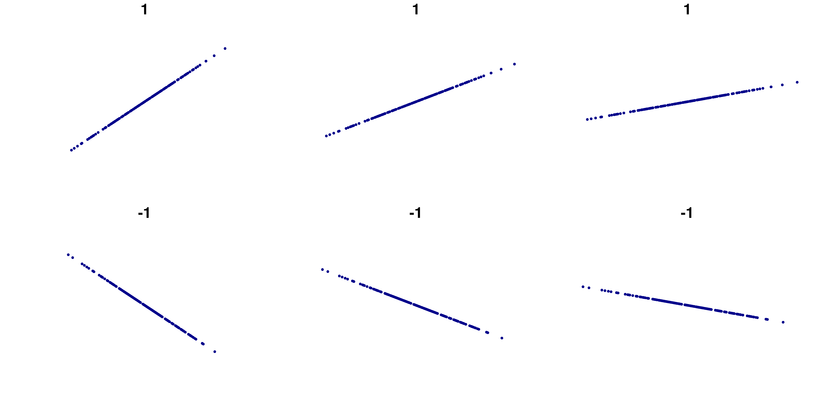
R code for plot by Denis Boigelot
Pearson correlation for penguin data
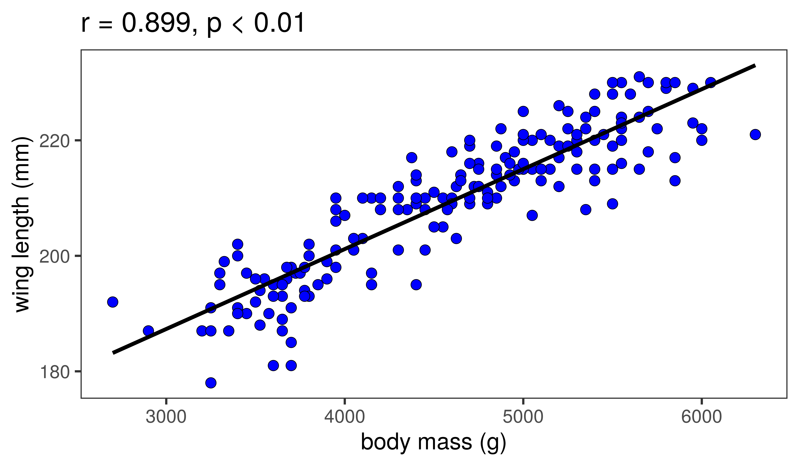
Interpreting a correlation
Scientists have found the gene for...
Eating ice cream does not cause dehydration
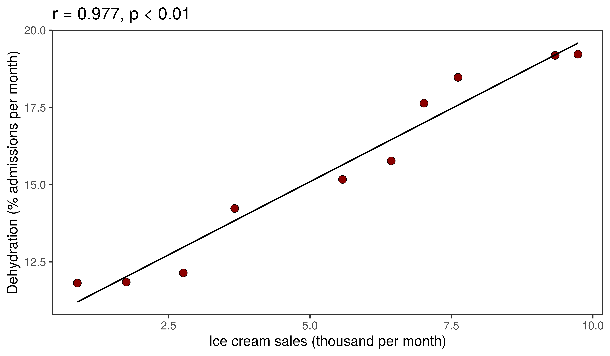
Quantifying the linear relationship
r does not provide information on slope
but isn't the slope interesting?
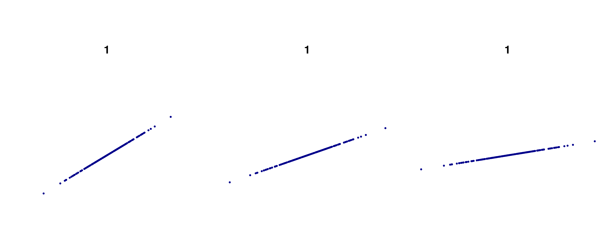
R code for plot by Denis Boigelot
Limitations of correlation
- We would like to be able to quantify how much a variable changes
- This would allow us to predict the value of one variable if we know the value of another
- Even
extrapolatebeyond the range of measurement
To do this
- We assume that the 2 variables have a linear relationship (significant correlation)
- We set up a statistical
modelof how the relationship works - We fit the data to the model using
linear regression
Modelling the relationship
Setting up the linear model
- Our model has several
coefficients - These are like parts of the model:
- The slope of the line
- The y-axis intercept
- There is also variance, or error of the datapoints
- These are basically unknown and/or unsampled variables
- We can quantify how well the data is explained by the linear model using
R-squared
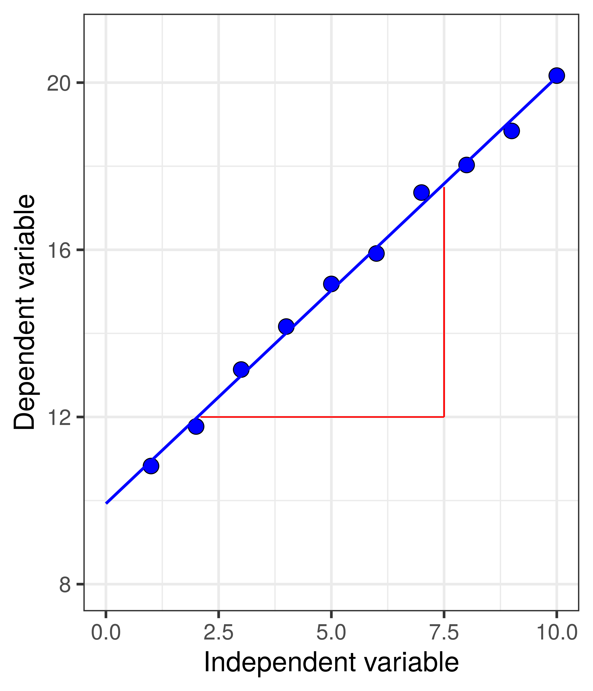
Carrying out the regression
- The regression fits the data to the linear model using least squares
- The slope is 0.945
- The y-axis intercept is 10.291
- R-squared is 0.972
- The remaining variation is due to unknown or unsampled variables
Now the really cool bit
- We can predict the dependent variable for any value of the independent variable
- y = slope*x + intercept
- For example, x = 2.5
- y = 2.5*0.945 + 10.291
- y = 12.6527176
Now
- Let's call slope m
- And the intercept c
- y = mx + c
- The general formula for a linear relationship

The graph is the visualisation of the model
Linear regression for penguin data
Slope = 0.01384, y axis intercept = 0.01384, R-squared = 0.8063
Data analysis 4
- Visualising two quantitative variables: scatterplots
- Dependent and independent variables
- Fitting a linear relationship:
least squares - Correlation coefficients:
r - Interpreting a correlation
- Quantifying the linear relationship
- Modelling the relationship: linear regression
That's all folks!
Next: revision session and exam